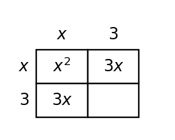

Algebra 1 · Unit 6 · Section 6.2 · Investigation
Build the Square
Completing the Square
Learning Target: Students will solve quadratic equations by completing the square and connect the process to vertex form.
Directions
- Work with a partner unless your teacher assigns a different grouping.
- Show the evidence you use, not only the final answer.
- When a representation changes, keep the meaning of the quantities attached to your work.
- Revise an answer if later evidence shows that your first claim was incomplete.
Part 1 · Complete the Square Visually
The model represents $x^2+6x$ with a missing corner. Determine the side length and area of the missing square.

Part 2 · Build Perfect Squares
| Expression | Half of $b$ | Add $(b/2)^2$ | Perfect-square form |
|---|---|---|---|
| $x^2+8x$ | |||
| $x^2-10x$ | |||
| $x^2+3x$ |
Part 3 · Solve
Solve $x^2+6x-7=0$ by completing the square. Keep both square-root branches.
Part 4 · Vertex Connection
Rewrite $y=x^2+6x+5$ in vertex form and identify the vertex.